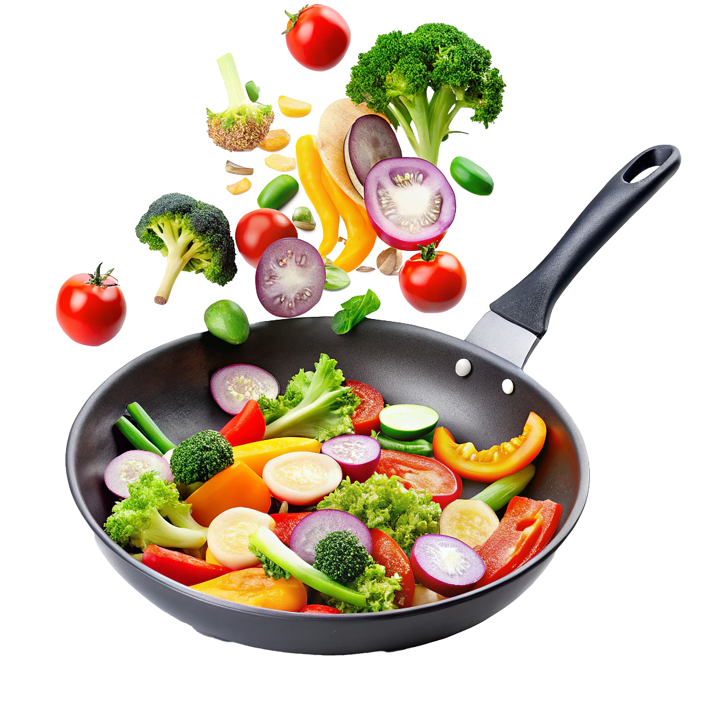

Carregando receitas...
Aprenda a fazer suas receitas favoritas ou encontre sua próxima receita favorita!
Explorar receitas
Carregando receitas...
O Saborê foi criado para facilitar a busca por receitas e ajudar você a descobrir novos pratos para preparar em casa.
Aqui você encontra receitas organizadas por categorias, níveis de dificuldade e diferentes tipos de pratos.
Ver receitasReceitas doces, salgadas, massas, carnes e muito mais.
Encontre receitas de forma simples e organizada.
Opções para diferentes níveis de experiência na cozinha.